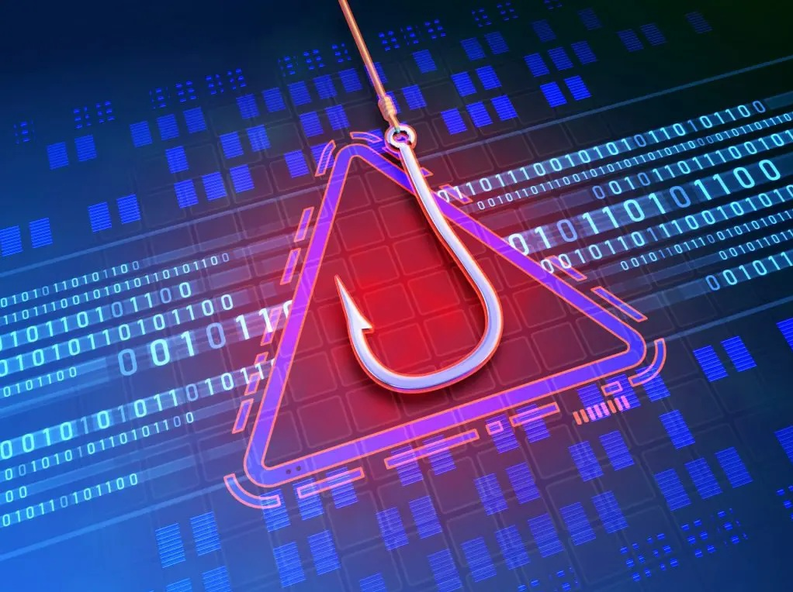

Thesis: Obfuscation-Aware Feature Engineering for Evasion-Heavy Phishing URL Detection
Adds Shannon entropy and structural complexity features, 13 in total, so lightweight classifiers can catch obfuscated phishing URLs without deep learning or page content. Tested with Logistic Regression, Naïve Bayes, Random Forest, AdaBoost, and XGBoost on a balanced 10,000-URL dataset from 2022 to 2026. Co-authored with Kyle Gabriel A. Maristela and Owen Phillip C. San Luis.